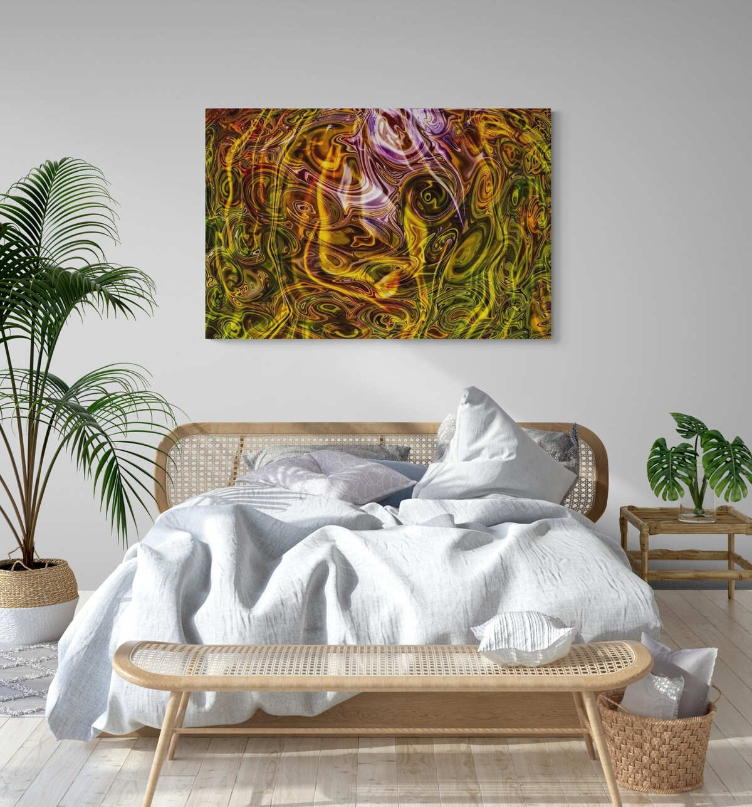
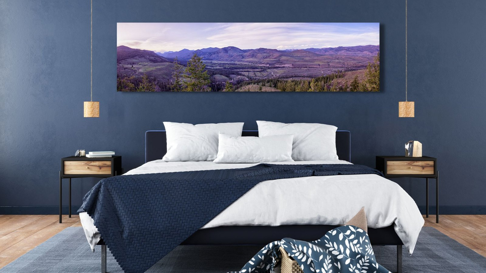
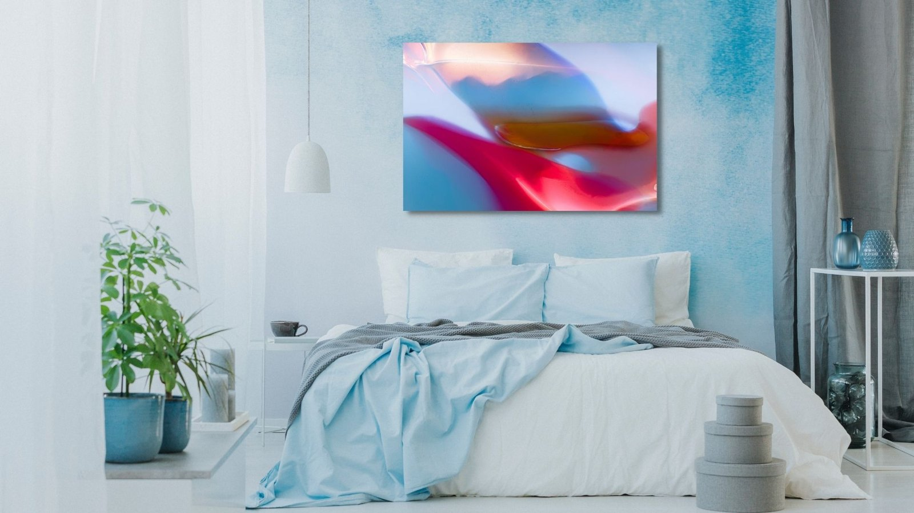

The Library · Omaste Witkowski
Get Better Sleep Naturally

Many people toss and turn restlessly for hours wishing that there was a way to get better sleep naturally.
Many people, including myself at times, struggle to fall asleep, stay asleep, and sleep deeply. One of the worst things to happen to me is that I toss and turn for hours and then fall fast asleep right before my alarm goes off!
So what do we do? Many people take some form of supplement, sleeping pill, or other sleep aid. For a lot of us, it’s better than not sleeping.
I was lucky enough to work for an actual sleep doctor, he specialized in sleep medicine, and I learned many valuable tips, tricks, and where to find the best resources while I was working with him.
One of the most interesting things I discovered was that our bedroom sleep environment was actually critical to better sleep. There are also other factors of course, but pay attention what you surround yourself with before, during, and after you sleep.
Did you know that A good night’s sleep is just as important as regular exercise and a healthy diet?
In Fact...
- Poor sleep has immediate negative effects on your hormones, exercise performance, and brain function
- It can also cause weight gain and increase disease risk in both adults and children
- In contrast, good sleep can help you eat less, exercise better, and be healthier
- If you want to optimize your health or lose weight, getting a good night’s sleep is one of the most important things you can do.
Bedroom Art, Photography, and Sleep Environment
Many people don’t realize that there are some surprising connections between sleep quality and interior design. Your bedroom environment plays a huge role in getting better sleep.
Landscape and/or Nature Art To Help You Sleep Better
- Nature helps us relax and when we bring nature art into our sleeping spaces, they will encourage high quality sleep.
- Many natural fabrics and room furnishings pair well with nature art. The colors and textures coordinate nicely.

Shop The Full Nature Sleep Collection Here
Abstract Art To Help You Sleep Better
- Abstract art has soothing qualities that can help our brains turn off and relax naturally.
- Bring calming abstract art into your bedroom and enjoy the healing qualities whil you are awake and sleeping.

Shop The Full Abstract Sleep Collection Here
Find your own piece with the art adventure · Ask the gallery what fits your wall